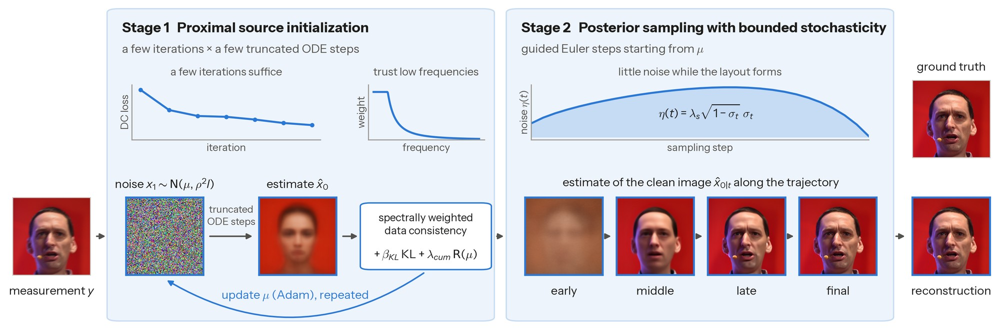
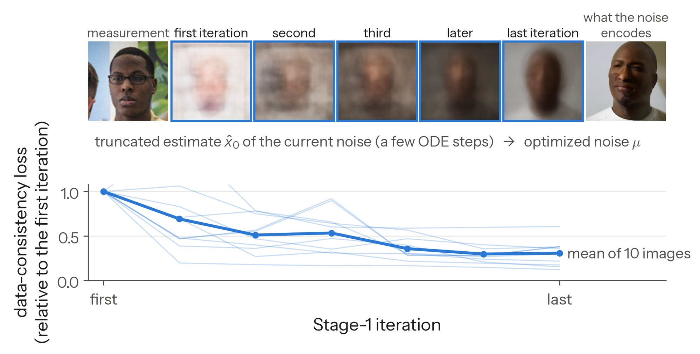
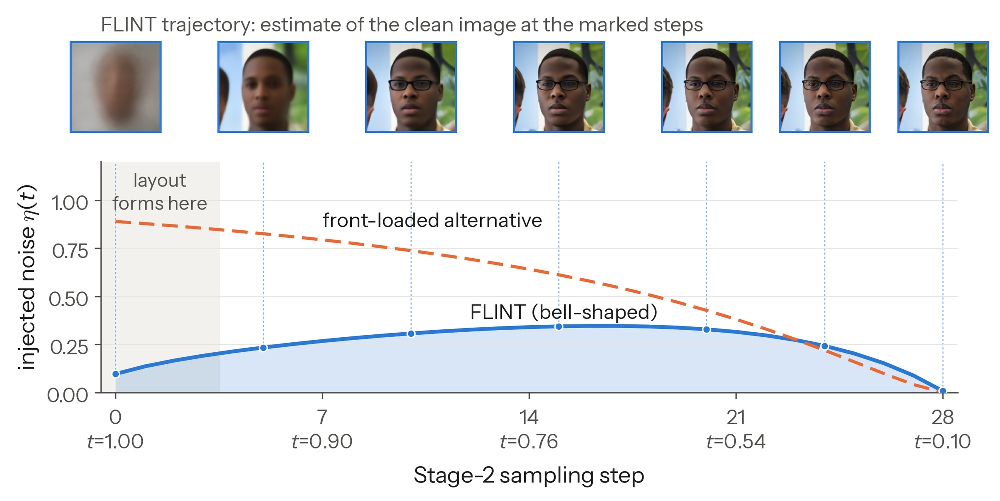
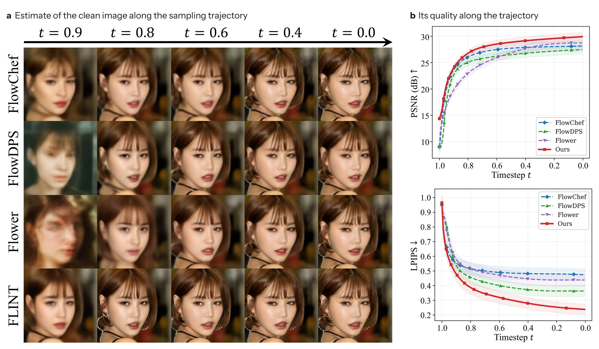
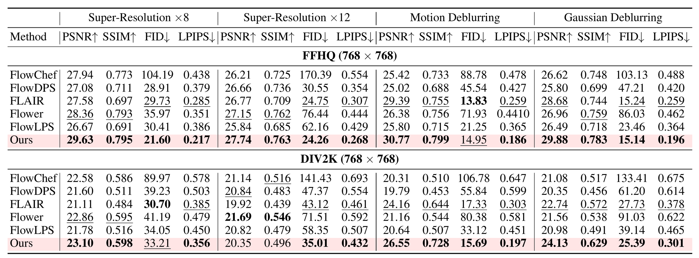
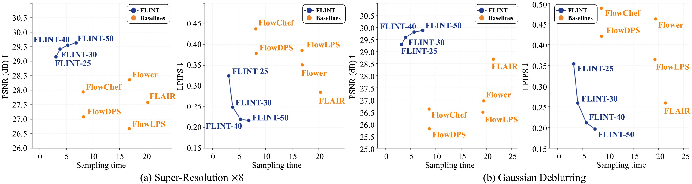

FLINT: Coupling Proximal Initialization
and Bounded Stochasticity for
Flow-Matching Inverse Problems
1Dept. of ECE 2IPAI 3INMC & AIIS, Seoul National University
†Corresponding author
Initialize close enough, sample carefully to keep it. FLINT first moves the initial noise near one that the model maps to an image consistent with the measurement, then samples with little noise while the image takes shape. The result: state-of-the-art perceptual quality and competitive distortion metrics, at a lower sampling cost than the flow-matching baselines.

Abstract
Flow matching models have emerged as a dominant paradigm for generative posterior sampling in imaging inverse problems. Existing solvers follow two distinct lines of work: trajectory-space methods, which refine sampling dynamics from random initial noise, and source-space methods, which optimize the initial noise itself. While most prior work treats these as independent design choices, we show that they are inherently coupled. We derive a unified stability bound that links initialization proximity and cumulative sampling stochasticity through a multiplicative envelope, complemented by two empirical observations. First, we identify a sufficiency regime in which a moderately optimized proximal source initialization is enough to attain the performance plateau, rendering exhaustive source-space optimization unnecessary. Second, this initial advantage is fragile: it is eroded by excessive stochasticity accumulation during guided sampling, necessitating a mechanism that bounds the cumulative noise injection. These findings motivate FLINT, a two-stage framework that operationalizes this coupling. FLINT establishes a high-fidelity starting point via a manifold-constrained proximal objective in only a few iterations, then performs guided sampling under a bounded stochasticity schedule that helps prevent erasure of the initialization advantage. Across diverse inverse problems, FLINT delivers state of the art perceptual quality and competitive distortion metrics while maintaining superior computational efficiency.
Initialization and stochasticity are coupled
Most solvers either steer the sampling trajectory from random noise or optimize the initial noise itself, and the two are usually treated as separate design choices.
![Five panels on stacked noise-level manifolds from M1 at the top to M0 at the bottom, with the measurement subspace y = Ax as a green line. Trajectory-space methods: (a) DPS and FlowChef start from random noise and alternate a generative step with a measurement-guided correction on every noisy state; (b) FlowDPS and Flower jump to the clean estimate, correct it and re-noise to the next level. Source-space methods: (c) DMPlug and D-Flow run many MAP iterations on the initial noise, then one deterministic flow to x0; (d) N-HMC and D-Flow SGLD sample the initial noise with Hamiltonian or Langevin dynamics instead. (e) FLINT: a short measurement-guided move from the random start to a proximal start, then a guided trajectory inside a narrow band of bounded stochasticity that ends where M0 meets the measurement subspace.](assets/fig/paradigms_mobile.svg)
Our analysis puts them in one bound. Take a reference noise x1* that is typical under the prior and consistent with the measurement, and let x0* be the output of the same guided sampler run from x1* with its injected noise switched off. A start x̃1 within distance δ of x1* then gives a sample Φg(x̃1) that obeys (Proposition 3.1)
where d is the dimension, G the stochasticity accumulated during sampling, and m(t) bounds how fast nearby trajectories separate. The two terms add up under a common prefactor. This motivates two design choices.
A nearby start is enough
Once δ² ≪ d·G, pushing δ further barely lowers the bound, and empirically quality plateaus long before exact inversion (the sufficiency regime below).
↳ Exhaustive source-space optimization buys little.
Too much noise erases it
A large G raises the bound for every start, however close: for a fixed M+ the bound grows with G. The noise injected during sampling has to stay limited.
↳ A good start is wasted if the sampler randomizes it away.
![How the starting point and the injected noise affect quality. a: quarter-circle diagram of the spherical interpolation from the exact inversion of the ground truth (C0 = 0) through the proximal start (C0 = 0.4) to random noise (C0 = pi/2). b, c: PSNR and LPIPS against C0 for four levels of the cumulative stochasticity G; all curves stay flat up to C0 = 0.4, and larger G lowers and flattens them. d: posterior samples, zooms and unconditional samples from the three starts; the random start loses hair detail and its unconditional sample is a different person.](assets/fig/analysis_mobile.jpg)
Method
A few cheap iterations to start close, then sampling that keeps the injected noise small while the layout forms.
Stage 1 Proximal source initialization
A few Adam iterations on μ, the mean of a Gaussian variational distribution over the initial noise. Each iteration forms a clean estimate by truncated sampling, scores it with a Wiener-weighted data-consistency loss that trusts low frequencies plus KL and cumulant terms that keep μ Gaussian-like, and backpropagates through the first step only via the SDO shortcut.
Stage 2 Proximity-preserving posterior sampling with bounded stochasticity
Guided sampling from μ: estimate the clean image, correct it toward the measurement, re-noise with η(t) = λs√(1−σt)·σt, which is small at t ≈ 1 and at t ≈ 0.



Results
Quantitative comparison
1,000 FFHQ and 800 DIV2K images at 768×768, measurement noise σy = 0.03, 50 NFEs for every method, all on Stable Diffusion 3.5-Medium.

Computational cost vs. performance

BibTeX
@inproceedings{bang2026flint,
title = {{FLINT}: Coupling Proximal Initialization and Bounded Stochasticity for Flow-Matching Inverse Problems},
author = {Bang, Junseo and Choi, Daewon and Mun, Dong Ju and Chun, Se Young},
booktitle = {Advances in Neural Information Processing Systems},
year = {2026}
}